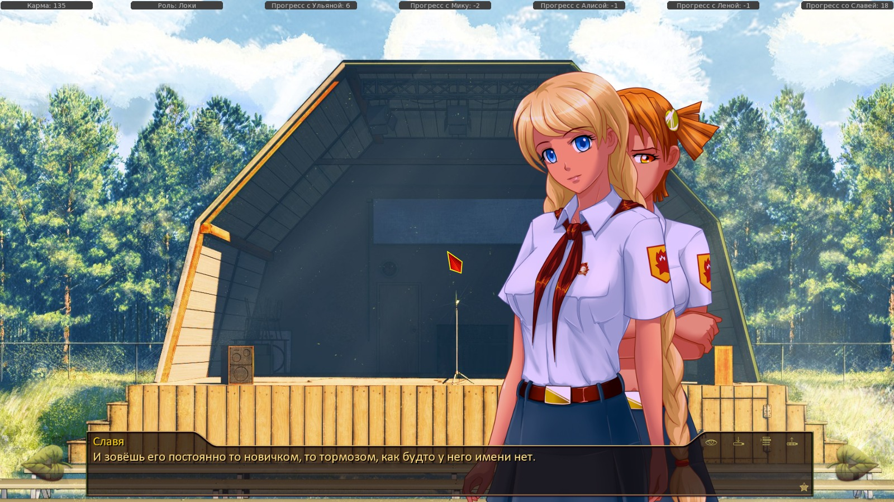

7 дней лета, билд 0.24a (Завершение Славя-рута)
Страница 2 из 2 •  1, 2
1, 2
Re: 7 дней лета, билд 0.24a (Завершение Славя-рута)
автор Dantiras в Вт 20 Окт 2015 - 2:41
Визуальный баг
Строки 4595-4598
- Код:
show sl normal pioneer at cright with dspr
sl "И зовёшь его постоянно то новичком, то тормозом, как будто у него имени нет."
"Славя успокоилась и методично добивала противницу."
th "И чего она так взъелась?"
- СКРИНШОТ:

4826 mt "Мой кавалер будет самым красивым!" Скорее sl
5003 "Разухабиста японска красотка, подарившая лицо, голос и сценический образ компьютерной программе - синтезатору." японская или разухабисто японска

Dantiras- Мизантроп

- Сообщения : 615
Дата регистрации : 2015-08-17
Re: 7 дней лета, билд 0.24a (Завершение Славя-рута)
автор Dantiras в Вт 20 Окт 2015 - 3:56
alt_day7_sl_1996 - вылет
- CRASH:
- I'm sorry, but an uncaught exception occurred.
While running game code:
File "game/scenario_alt/Scenario/WIP/alt_route_sl_cl_4.rpy", line 2261, in script
File "renpy/common/00voice.rpy", line 289, in python
File "game/screens.rpy", line 1069, in python
ValueError: need more than 2 values to unpack
-- Full Traceback ------------------------------------------------------------
Full traceback:
File "C:\Users\Dantiras\Desktop\everlasting_summer-1.1\renpy\execution.py", line 288, in run
node.execute()
File "C:\Users\Dantiras\Desktop\everlasting_summer-1.1\renpy\ast.py", line 1533, in execute
self.call("execute")
File "C:\Users\Dantiras\Desktop\everlasting_summer-1.1\renpy\ast.py", line 1546, in call
renpy.statements.call(method, parsed, *args, **kwargs)
File "C:\Users\Dantiras\Desktop\everlasting_summer-1.1\renpy\statements.py", line 144, in call
return method(parsed, *args, **kwargs)
File "renpy/common/00voice.rpy", line 289, in execute_voice
voice(fn)
File "C:\Users\Dantiras\Desktop\everlasting_summer-1.1\renpy\character.py", line 807, in __call__
self.do_display(who, what, cb_args=self.cb_args, **display_args)
File "C:\Users\Dantiras\Desktop\everlasting_summer-1.1\renpy\character.py", line 673, in do_display
**display_args)
File "C:\Users\Dantiras\Desktop\everlasting_summer-1.1\renpy\character.py", line 476, in display_say
rv = renpy.ui.interact(mouse='say', type=type, roll_forward=roll_forward)
File "C:\Users\Dantiras\Desktop\everlasting_summer-1.1\renpy\ui.py", line 237, in interact
rv = renpy.game.interface.interact(roll_forward=roll_forward, **kwargs)
File "C:\Users\Dantiras\Desktop\everlasting_summer-1.1\renpy\display\core.py", line 1864, in interact
scene_lists.replace_transient()
File "C:\Users\Dantiras\Desktop\everlasting_summer-1.1\renpy\display\core.py", line 554, in replace_transient
self.remove(layer, tag)
File "C:\Users\Dantiras\Desktop\everlasting_summer-1.1\renpy\display\core.py", line 828, in remove
self.hide_or_replace(layer, remove_index, "hide")
File "C:\Users\Dantiras\Desktop\everlasting_summer-1.1\renpy\display\core.py", line 752, in hide_or_replace
d = oldsle.displayable._hide(now - st, now - at, prefix)
File "C:\Users\Dantiras\Desktop\everlasting_summer-1.1\renpy\display\screen.py", line 189, in _hide
hid.update()
File "C:\Users\Dantiras\Desktop\everlasting_summer-1.1\renpy\display\screen.py", line 266, in update
self.screen.function(**self.scope)
File "C:\Users\Dantiras\Desktop\everlasting_summer-1.1\renpy\screenlang.py", line 1217, in __call__
renpy.python.py_exec_bytecode(self.code.bytecode, locals=scope)
File "C:\Users\Dantiras\Desktop\everlasting_summer-1.1\renpy\python.py", line 1304, in py_exec_bytecode
exec bytecode in globals, locals
File "game/screens.rpy", line 1069, in <module>
for caption, action, chosen in items:
ValueError: need more than 2 values to unpack
Windows-7-6.1.7601-SP1
Ren'Py 6.16.3.502
Everlasting Summer 1.0
Аудио
Строка 2820 alt_day7_sl_lone. Музыки вообще никакой нет.
Dantiras- Мизантроп
- Сообщения : 615
Дата регистрации : 2015-08-17
Re: 7 дней лета, билд 0.24a (Завершение Славя-рута)
автор Moonshine в Вт 20 Окт 2015 - 6:49
- Спойлер:
Твоя. Подделка.
Хреновый из меня Славянафаг, видимо.
/рукалицо
Насколько это правильно, применительно к персонажам, судить не возьмусь, но лично я бы Аристарха Геннадьевича предпочел, чесслово.
Но сильная концовка. Опустошает.
Что-нибудь более детальное и связное потом напишу. Наверное, после прочтения инт-ветки уже.
Сейчас просто поток сознания в восьмом часу утра. По горячим следам. Прошу, делайте на это скидку.
Несколько разочаровало отсутствие каких либо развилок/путей влияния в последних днях. Получается, весь набор очков заканчивается на катакомбах в пятом дне. Потом все встает на рельсы. Но, может, кое-что просто припасено для инт-ветки.
В остальном, события насыщенные и интересные, но слишком уж утянули одеяло на себя, кмк.
Эмоционально, как уже говорили, очень сильно. Самый мощный рут в этом отношении.
Но Семена и Славяны малооо. Хорошо - но критически мало. Они вместе - но постоянно что-то делают. Я понимаю, что Славя деловая. А Семен вслед за ней становится таким же, оказывается в круговерти событий. Но из-за этого каких-то по-настоящему личных моментов получилось совсем с гулькин нос. И некоторые из них Семен потратил исключительно на попытки её полапать. Кто его покусал в этом руте? И что они знают-то друг о друге после всего этого?
При этом они все равно очень цепляют и доводят читателя до нужной кондиции. Хотя здесь мне, наверное, не следует давать оценок, я же предвзятый Славяфаг. Может цеплять сам факт её наличия.
По вышеозвученной причине, на мой взгляд, рут в этом компоненте уступает другим. Пусть и на голову превосходит их в том, что касается общего сюжета и раскрытости второстепенных персонажей. Саныч и Виола - 10/10.
Может, конечно, такой и была задумка. В таком случае, все удалось.
Как-то так. Смешанные чувства после прочтения.
Но написано, безусловно, хорошо. Продолжаете повышать планку. Надеюсь, Вы не боитесь четырнадцатилетних азиатских сопляков.
Последний раз редактировалось: Moonshine (Вт 20 Окт 2015 - 8:06), всего редактировалось 1 раз(а)

Moonshine- Маргинал

- Сообщения : 341
Дата регистрации : 2015-05-05
Re: 7 дней лета, билд 0.24a (Завершение Славя-рута)
автор peregarrett в Вт 20 Окт 2015 - 7:23
Дрищ, обливание водой в стандартном 1 дне:
после флешбека по persistent.dv_7dl_good Алиса так и остается удивленной.
4663 "К сожалению, после сегодняшнего утра и пробежки в зимней одежде сил оставалось маловато." - надо под условие паники у автобуса.
8566 if alt_day2_club_join_nwsppr: - не хватает какой-нибудь фразы по else, получается "Скажи.. Семён." и все.
8600 me "Да и Славя не оценит." - наверное, надо под условие конвоя Слави if alt_day2_rendezvous == 2, иначе с чего вспоминать про Славю?
8619 sh "Обязательно запишись в наш кружок, когда закончишь с обходом! Мы всегда рады новым членам!" - надо выше вставить вариант фразы, когда уже куда-то вступил, типа
elif alt_day2_club_join_nwsppr or alt_day2_club_join_musc or alt_day2_club_join_footbal or alt_day2_club_join_volley or alt_day2_club_join_badmin:
sh "Жаль, что ты уже записался, у нас очень интересно!"
9934 scene bg ext_dining_hall_away_day with flash - появляется столовая и тут же затирается площадью на 10130
alt_res_card_shuffles.rpy:
Встретились в финале с Ульяной - никакого объяснения особенных Ульянкиных правил не было. Надо добавить, если там не планируется глобальный перепил.
Да, тоже выпала "Твоя. Подделка."
Грусть и печаль, и можно было б напиться - но лучше пойду спать.

peregarrett- Находка для шпиона

- Сообщения : 3264
Дата регистрации : 2014-09-07
Возраст : 36
Re: 7 дней лета, билд 0.24a (Завершение Славя-рута)
автор 7dl-kun в Вт 20 Окт 2015 - 11:42
Moonshine, два слова - классик-рут. Они все будут такими, мало уняня, много экшна. Всё-таки первый рут в таком духе, пионер, можно сказать. Все нюни и розовые мыльные пузыри уходят в зрительский зал и ждут своего 7дл-часа.

7dl-kun- Находка для шпиона
- Сообщения : 3026
Дата регистрации : 2014-09-07
Откуда : здесь столько наркоманов?
Re: 7 дней лета, билд 0.24a (Завершение Славя-рута)
автор Элдхэнн в Вт 20 Окт 2015 - 14:23
el "И Шурика нигда нет."

Элдхэнн- Людовед

- Сообщения : 1002
Дата регистрации : 2015-03-30
Возраст : 38
Откуда : Москва
Re: 7 дней лета, билд 0.24a (Завершение Славя-рута)
автор nuttyprof в Вт 20 Окт 2015 - 15:14
День 5. Строки 172-181. Семён говорит о том, что девчонки ушли искать Шурика без него, а нашёл - именно он.
На самом деле - ходили все вместе.
Фикс ставил.
UPD. Тот же 5 день, ночь (строки в районе 4390).
Говорится о том, что "Она так и не надела галстук с момента, когда мы огораживали яму..."
Спрайт Слави - в пионерской форме с галстуком.
Может, есть смысл доработать этот момент с формой?

nuttyprof- Хикка

- Сообщения : 102
Дата регистрации : 2015-05-25
Возраст : 45
Откуда : Юг
Re: 7 дней лета, билд 0.24a (Завершение Славя-рута)
автор MoonkinBig в Чт 22 Окт 2015 - 15:20
1) Точка (и вообще знаки препинания) ставится после закрывающей кавычки, либо перед ней, но тогда "собственная" точка предложения не ставится.
"текст". или "текст!" - правильно lll "текст.". - неправильно
2) Если прямая речь завершается закавыченной цитатой, то все лишние закрывающие кавычки можно сократить.
"Основной текст "цитата". - правильно lll "Основной текст "цитата"." - неправильно.

MoonkinBig- Сыч

- Сообщения : 34
Дата регистрации : 2015-05-30
Re: 7 дней лета, билд 0.24a (Завершение Славя-рута)
автор XOLODOS в Чт 22 Окт 2015 - 20:11

XOLODOS- Сыч
- Сообщения : 66
Дата регистрации : 2015-07-31
Возраст : 24
Откуда : Россия, Смоленская обл. г.Починок
Re: 7 дней лета, билд 0.24a (Завершение Славя-рута)
автор Arlien в Чт 22 Окт 2015 - 20:52
Arlien- Людовед
- Сообщения : 1322
Дата регистрации : 2014-09-08
Re: 7 дней лета, билд 0.24a (Завершение Славя-рута)
автор Элдхэнн в Чт 22 Окт 2015 - 22:46
vs
label alt_day7_dv_7dl_ussr_epilogue
Найдите десять отличий.
Элдхэнн- Людовед
- Сообщения : 1002
Дата регистрации : 2015-03-30
Возраст : 38
Откуда : Москва
Re: 7 дней лета, билд 0.24a (Завершение Славя-рута)
автор 7dl-kun в Чт 22 Окт 2015 - 22:52
7dl-kun- Находка для шпиона
- Сообщения : 3026
Дата регистрации : 2014-09-07
Откуда : здесь столько наркоманов?
Re: 7 дней лета, билд 0.24a (Завершение Славя-рута)
автор Элдхэнн в Чт 22 Окт 2015 - 22:53
Элдхэнн- Людовед
- Сообщения : 1002
Дата регистрации : 2015-03-30
Возраст : 38
Откуда : Москва
Re: 7 дней лета, билд 0.24a (Завершение Славя-рута)
автор 7dl-kun в Чт 22 Окт 2015 - 22:54
7dl-kun- Находка для шпиона
- Сообщения : 3026
Дата регистрации : 2014-09-07
Откуда : здесь столько наркоманов?
Re: 7 дней лета, билд 0.24a (Завершение Славя-рута)
автор Lansar_Skavana в Пт 23 Окт 2015 - 23:53

Lansar_Skavana- Хикка
- Сообщения : 211
Дата регистрации : 2015-04-12
Re: 7 дней лета, билд 0.24a (Завершение Славя-рута)
автор Dantiras в Вс 25 Окт 2015 - 15:15
alt_route_un_7dl
Строки 11014-11026
- Код:
label alt_day7_un_7dl_selector:
if karma >= 75:
menu:
"Ну уж чёрта с два!":
"Я перебрался на водительское место и, немного подумав, вспомнил, где какая педаль расположена."
"Газ, кажется, был справа."
"Я нажал кнопку запирания двери и утопил педаль в пол."
"Автобус рванулся вперёд, прокалывая собой пустоту."
jump alt_day7_un_7dl_rf
"Прочь из автобуса!":
jump alt_day7_un_7dl_ussr
label alt_day7_un_7dl_ussr:
Возможное решение Поставить к if karma >= 75: оператор else с jump alt_day7_un_7dl_rf.
P.S. В Алиса-руте с этим всё в порядке.
Dantiras- Мизантроп
- Сообщения : 615
Дата регистрации : 2015-08-17
Re: 7 дней лета, билд 0.24a (Завершение Славя-рута)
автор Dantiras в Ср 28 Окт 2015 - 11:53
Не работает спрайт pi normal (во всей инт-ветке).
pi smile отображается правильно.
Dantiras- Мизантроп
- Сообщения : 615
Дата регистрации : 2015-08-17
Страница 2 из 2 • 1, 2